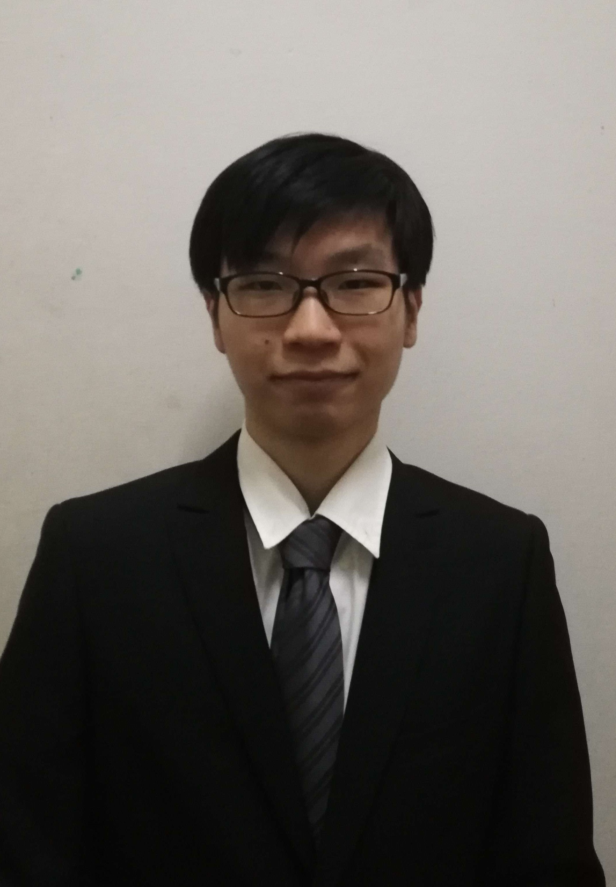

Hello there!
 GitHub Profile
GitHub Profile LinkedIn Profile
LinkedIn ProfileWork/Project Experience
Huawei Technologies Co. Ltd
June 2022 - October 2022
NTD Intern
Kuala Lumpur, Malaysia (On-Site)
- Huawei is a multinational technology corporation that design, develops, manufactures and sells telecommunication devices, networking solutions and consumer equipments.
- Onboarded Huawei Network Technologies Department (NTD) as part of the University Internship programme, and are responsible for assisting mentors' and departments' in developing in-house software and tools such as:
- Various analytical dashboard for use in tracking progress and tasks
- Various administrative systems and panels
- Data processing and cleaning
- In-house entertainment webapp (Quiz and Luckydraw)
- Infrastructure and Language used includes: Javascript, SQL, NodeJS, Python, and In-House Dev Tools.
Qixalite Project
August 2021 - October 2021
Backend Engineer & Tester
Australia (Remote)
- Qixalite is a community project in which it provides server hosting service for general gaming and other purposes including tournament hosting and upcoming lobby system.
- Volunteered as engineering staff, I've helped in development of the back-end side of the system, which
includes:
- Monitoring of server service with watchers to detect anomalies such as orphaned and long-running resources
- Installation and testing of server plugins for community needs and ease of server operations
- Other than development of services, I've also help contributed to map development for community use, noticiblely a training map.
- Infrastructure and Language used includes: NodeJS, Cloudflare, Kubernetes, and MongoDB.
Education
University Tunku Abdul Rahman
October 2022 (Graduated)
Degree, CS
Kampar, Perak, Malaysia
- Bachelor of Computer Science (Honours), CGPA: 3.5139 (Max of 4)
- Relevant Coursework:
- Internetworking, Database systems, Object oriented programming concepts, Software engineering principles, Server-side web development, Computer securities etc.
- Participated as member of the E-sports Society as community moderator for 1 year
Skills and Interests
- Skills: Community moderation and administration, Server management, Graphics Design, GUI design.
- Practicals: Javascript, NodeJS, MySQL, SQL, AWS Cloud Service, Digital Ocean Service, Python, GitHub Version Control and CI/CD.
- Interests: Gaming, Science, Literature Writing, Culinary, Scouting.